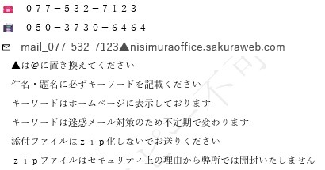

滋賀運輸支局近く・滋賀県全警察署車庫対応・丁種再々委託
Aお問い合わせ
お問い合わせはライン又はメールをご利用ください
事務所ライン

スマホからメッセージや画像を
簡単に送れます
メール

＊メール件名・題名に全角ひらがなで「にしむら」と記載ください
キーワードは迷惑メール防止のため不定期で変わります
TEL. 077-532-7123（自動音声対応） ＊電話は自動音声対応でメイン業務についてご案内しております。
B車庫証明・登録・再交付等
車やバイク関係のご依頼時は
下記の依頼申込書を添付ください
↑書類の送付先・料金等記載あり
C業務お役立ちソフト
- C-1 【 事件簿管理ソフト 】 入力専用フォームから簡単にデータ入力ができ、請求書・領収書・書類送付状・ＦＡＸ送信状が簡単に出力できます。見積書・預り証もお使いいただけます。案件票も出力できるので、紙ベースでも管理・保存できます。
- C-2 【 相談記録簿ソフト 】 受けた相談内容、やりとりした内容を時系列的に記録でき、備忘記録が簡単に作成できます。預り証、見積書、書類送付状、ＦＡＸ送信状もお使いいただけます。
- C-3 【 内容証明用紙フォーム（20字×26行タイプ） 】 簡単に入力ができ、きれいに内容証明が作成できます。もちろん訂正も簡単にできます。縮小・拡大することによりＢ5，Ｂ4版も作成可能です。
- C-4 【 親族関係図作成ソフト 】 入力専用画面で、簡単にデータ入力ができ、パズルをはめるように親族関係図を作成できます。
- C-5 【 行政書士報酬説明書フォーム 】 文章の選択がマウスひとつで簡単にできたり、簡単に素早く報酬説明書が作成できます。
- 動画集 当事務所制作の動画集です。当事務所と関連する内容について制作しております。